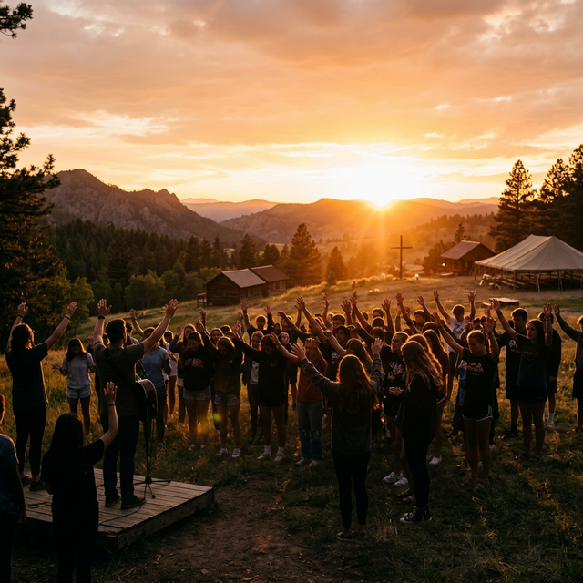

Portfolio

Avenir
Ambition, realized.
10,000 sf outdoor amenities + 6,500 sf indoor amenities
23-story residential tower + 40,000 sf renovated office + 1,200 sf retail
With the odds against us, we succeeded by refusing to accept “we can’t.” Our team came together around an ambitious high-rise vision centered on legacy and wealth preservation, with a partner willing to place his bet on us—just as others had previously trusted and bet on him.
We leveraged what we knew and adapted quickly where we didn’t. Tandem’s first experience with Type-1 tower construction brought new subcontractor partners, but what wasn’t new: delivering under pressure. We succeeded through our perseverance, creativity, and an ability to find opportunities that others overlooked. Taken together, this allowed us to take the next step in our evolution.
Avenir, at the time our most ambitious undertaking, pushed the boundaries of scale, financing, and coordination and showed what is possible when boldness is matched with strong execution.
For Avenir, we managed the partial-demolition of a historic brick-and-timber office building simultaneously with foundation work for a new 23-story tower, all while contending with the complications inherent with Chicago’s mass-transit Blue Line subway line running directly beneath.
As we stretched ourselves, we forged new banking relationships that are now longtime trusted partners. While we delivered in January 2020 and into the uncertainty of a pandemic, our commitment to a long-term hold strategy allowed us to refinance with 35-year fixed debt through HUD 223(f), which will ensure stability for years to come.
Outcomes + Why It Matters
What did we know before everyone else?
We uncovered a zoning arbitrage opportunity through the site's 'downtown expansion zone' location, an angle that was not widely known in the greater development community. This allowed us to outbid more established firms. We were able to secure the site understanding that higher density was nearly assured – and that acquisition costs would land at a significant per-unit discount – locking in an edge before shovels hit the ground.
What went wrong and what did we do about it?
The pandemic decimated creative loft office demand and left our new-cleared timber floorplates with few viable tenants. As unexpected vacancy dragged on, we pivoted to creatively re-imagine the empty space as renovated apartments, now known as Lofts at Avenir. The Lofts added significant revenue and, most importantly, NOI that allowed the project to reach stabilization.
How are we better because of it?
Avenir pushed us to default to ‘why not?’ – leaning in on ambition and group trust over pedigree. We learned the value of partners who bet on us, and the responsibility of honoring that trust. We also saw firsthand that speed-in-execution is its own education. We learned by building, not theorizing. And while creative financing can rescue an imperfect design, it shouldn’t be the plan. Real edge comes from working side-by-side, in the trenches, with domain experts.
What was the lasting impact of Avenir?
Avenir’s legacy is that it redefined what Tandem could take on. It cemented our reputation for creativity under pressure, gave us durable banking relationships and positioned us as a proven high-rise developer.
Avra west loop
When the world paused, we pushed.
Full suite of amenities across two floors
20-story tower + 1,500 sf retail
In the middle of a once-in-a-century disruption brought on by the pandemic, we refused to stand still. We rallied multiple teams to deliver a very dense development across three tight urban lots. We negotiated air rights, stayed focused through volatility, and achieved lease-up success when “experts” were hard to find.
We relied on preparation and hard-won experience to turn obstacles into opportunities and unmatched efficiency. That execution strengthened our banking and equity relationships, leading to successful financing outcomes with familiar lenders and partners. In the process, we minimized risk for our LPs while much of the world was retreating. Avra became a test of grit and a clear display of our resilience and adaptability.
Delivering Avra meant threading a needle across three tight parcels. We negotiated complex air-rights deals, balanced the demands of a dense site, and coordinated closely with our construction and design partners to fit a 20-story tower into an urban patchwork.
Through the uncertainty of a pandemic, we stayed disciplined—sequencing trades, mitigating supply chain delays, and maintaining alignment across lenders, equity, and construction partners. The result was a tower that not only rose quickly but stabilized faster than expected. Avra made clear that even in volatile markets, disciplined execution wins.
Outcomes + Why It Matters
What allowed for a high-rise building to be approved on such a small site?
We understood the nuance of zoning. We were able to leverage the downtown expansion zone to bid aggressively – which allowed us to unlock density and edge from the onset.
How was the construction affected by the COVID-19 pandemic?
Construction on Avra West Loop started in February 2020. When COVID shutdowns started in March, Tandem called for a 2-week suspension of construction to allow our trusted trade partners to assess the situation and prepare their personnel to work through the pandemic. When work resumed in April, the construction team rallied together, made up the lost time, and pushed through to deliver the building in spring 2021. This commitment to seeing the project through positioned Avra West Loop to capitalize on a strong leasing season and reach full occupancy just 20 months after construction started, despite the once-in-a-lifetime COVID-19 pandemic.
What role did relationship-building play in this project?
Avra proved the flywheel of trust that drives our work. At our first high-rise, Avenir, we built credibility with Fifth Third—and that confidence carried seamlessly into another eight-figure loan and, later, permanent financing through their Bellwether platform. On the acquisitions side, patient relationship-building won over a seller wary of tire-kickers. And when institutional preferred equity pulled out at the start of construction, a long-time capital partner stepped in at the pivotal moment. Avra made clear: relationships are the engine that moves a project forward.
What was the story on absorption and leasing velocity?
In 2021, a slow leasing season had many Chicago developers worried renters wouldn’t return. By spring, traffic rebounded and absorption surged—our in-house leasing team pushed applications to reach 95% occupancy in just eight months, right as winter set in. The coordinated, strategy-first approach set clear, ambitious goals that energized the team, aligned incentives, and left everyone proud of the results. With the building stabilized, we shifted focus to rent optimization, positioning Avra today as one of the highest per-square-foot projects in the West Loop.
Sage West Loop
Speed Meets Discipline.
Full suite of penthouse amenities
18-story tower + 1,800 sf retail
At Sage West Loop, we returned to familiar ground with trusted trades, pushing efficiency to its peak. We were the only group in Chicago to secure a HUD 221(d)(4), loan at the time—locking in rates just before their sharp rise—and fixed construction costs by mid-2022, ahead of a once-in-a-generation inflation surge.
Sage marked a shift from gut & instinct to experience & data. That shift gave us clarity under pressure and the conviction to commit long-term—a move validated when we avoided refinancing as rates climbed nearly fivefold.
The project embodies disciplined execution, early risk management, and structures built to last. It's also why we believe real estate, at its best, is a long-term venture.
We turned the opportunity into execution, balancing HUD complexity, cost control, and speed to stabilize ahead of the curve. We optimized design, financing, budget, and schedule in parallel—leaving no stone unturned. We mastered HUD 221(d)(4) financing as a durable edge, managed its complexity, and kept the project moving. We controlled costs relentlessly, built at pace, and launched lease-up early to accelerate results.
We trusted the A-team to run — coordinating partners and internal team members across financing, design, and construction. We cut through volatility, delivered on time and under budget, and stabilized quicker than the market thought possible. Sage now stands as a benchmark for speed, efficiency, and conviction.
Outcomes + Why It Matters
What made a HUD 221(d)(4) insured mortgage right for this project?
The capital strategy at Sage lives in its DNA and was baked into the project from the start. The thesis was clear: get back to basics, simplify, and build for the long haul. From day one, it was envisioned as a long-term hold—so every decision in design, construction, and management prioritized stable cash flow over immediate returns.
How did Sage fulfill Chicago’s Affordable Requirements Ordinance?
We completed a creative, highly involved three-project off-site structure to fulfill the onerous and constantly evolving affordable housing landscape in Chicago. This effectively allowed the triggering project at 1044 W Van Buren to benefit from an ARO in-lieu payment during a time when in-lieu payments were not allowed. This has an outsized impact for the long-term financial success of the high-rise since just 16 affordable units are on site and all at 100% AMI, well below the typical burden found on all new construction in the West Loop.
Was construction really completed in just 15 months?
Speed is the product of diligent planning, and Tandem does not compromise on preconstruction planning and coordination. Tandem’s integrated team invested thousands of hours preparing for construction alongside trusted trade partners in order to deliver in record time. The first temporary certificate of occupancy was issued 11 months after construction started, and the final certificate of occupancy was issued 4 months later. The result: accelerated velocity that caught seasonal leasing at its peak and a building that completed lease-up just 19 months after breaking ground.
What were the big takeaways from Sage?
Our All-in Ownership™ makes a difference in the market. By having an owner's mindset, we were able to plan ahead for go-to market roadblocks in every aspect of the design and construction and even lease-up process.
Mode Logan Square
Shared Vision.
2-building structure with central courtyard and 6,000 sf street-facing retail
MODE Logan Square is a two-building, mixed-use development at 2501 W Armitage, built on the site of a former fine arts storage facility dating back to the early 1900s. Tandem began work in 2013, leading a collaborative rezoning effort alongside Alderman Proco Joe Moreno and Antunovich Associates. The final project includes 78 apartments, 6,500 square feet of retail, and 55 parking spaces — all organized around a landscaped interior courtyard that brings light, greenery, and community to the center of the block.
Just steps from the Western Blue Line and LEED certified, MODE helped catalyze the neighborhood’s growth and marked the beginning of Tandem’s in-house property management platform.
We pushed MODE forward with persistence and discipline. Our team guided a complex rezoning and entitlement process, balancing scale, design, and retail activation across multiple iterations. We spoke up when the numbers drifted and kept the focus on long-term value. By securing approvals and entitlements, we unlocked the potential of the site and positioned the project for delivery.
We carried the project through uncertainty. Instead of selling, we doubled down – building trust with partners and stakeholders. We executed steadily to transform a challenging site into a neighborhood anchor. As our first ground-up development, MODE established the approach and discipline that continue to guide our work today.
Outcomes + Why It Matters
What was the original vision for MODE Logan Square?
MODE was our first ground-up multifamily project and a chance to reimagine a historic fine-arts storage facility as a vibrant residential anchor. We saw an opportunity to bring modern design, transit-oriented convenience, and new energy to Logan Square before it was on many developers’ radar.
What obstacles did the project face and how were they overcome?
MODE required a rezoning process, coordination with neighbors, and careful integration of new construction within a historic fabric. Financing a first-time development also demanded building trust with lenders and equity partners. We overcame challenges by leaning into transparency and partnership. By earning community support, sequencing entitlements carefully, and delivering flawlessly, we turned early skepticism into lasting credibility.
How did MODE shape Tandem’s trajectory?
MODE was a proving ground. It taught us how to manage entitlement risk, align capital, and build from scratch with no safety net. MODE also forged our operating playbook – demonstrating the power of owning a product experience well beyond delivery.
How did MODE contribute to the neighborhood's growth and character?
MODE a former fine-arts warehouse into a modern, transit-oriented community. It added housing supply without erasing local character. The project’s retail spaces activated the street, while the central courtyard created a shared social hub. MODE showed that thoughtful development can enhance a neighborhood’s identity, offering residents modern design and connectivity while respecting the independent spirit of Logan Square.
The Kamingo
To be announced.
Full amenity suite with 9,000 sf street-facing retail + 2,000 micro
The Kamingo is our statement of intent in Florida. Located in the heart of Tampa Heights, it leverages Qualified Opportunity Zone incentives to create lasting community impact and durable returns. Expanding our HUD expertise into new markets, we’re confident our disciplined approach will unlock value where others hesitate.
Through partnerships with leading architects, designers, and legal minds, we’re delivering a project that combines retail activation at street level, micro-units for evolving lifestyles, and a bold exterior expression. For residents, it attracts pioneers and long-term tenants alike. For Tandem, it marks the start of a broader regional expansion—exporting Chicago’s standard of excellence and setting a new benchmark for Tampa’s built environment.
Approach
& execution
The Kamingo called for equal parts creativity and discipline. We navigated a new municipal framework in Tampa Heights while structuring financing to maximize Qualified Opportunity Zone benefits. On the ground, we coordinated across multiple parcels to bring together a dense mix of residences, retail, and parking in a rapidly evolving neighborhood.
By leaning on our Chicago-honed playbook—integrated preconstruction, early trade alignment, and radical transparency—we managed entitlement risk, set clear cost controls, and pushed forward a bold design. The result is a project that brings elevated architecture and long-term durability to a market primed for growth.
Outcomes + Why It Matters
Why Tampa Heights, and why now?
Tampa Heights is a neighborhood at an inflection point. Its proximity to downtown and easy access to major thoroughfairs made the location a strong choice. By moving early, we secured a site in the heart of the district and paired it with Opportunity Zone incentives. This timing created both downside protection and long-term upside—positioning Tandem ahead of a wave of regional and institutional capital.
What obstacles did you face in a new market?
Entering Tampa meant navigating unfamiliar zoning frameworks, new municipal processes, and building trust with local partners. We approached it the same way we always do: through preparation, persistence, and transparency. By forging partnerships with local experts and staying disciplined in execution, we turned challenges into momentum.
How does The Kamingo bring a new standard to Tampa’s market?
Because we own and operate our buildings, we understand what residents need day to day, and where typical developments fall short. That feedback loop shapes everything from unit layouts to amenity design to service standards. With The Kamingo, we’re bringing that resident-first perspective to Tampa Heights, raising the bar for quality, functionality, and long-term livability in a fast-growing market.
What’s the broader significance of The Kamingo for Tandem?
For us, The Kamingo is proof our model travels. It demonstrates that Tandem’s integrated approach, financial discipline, and Chicago standards of excellence can thrive in new markets. It marks the start of a broader regional expansion and sets a precedent for the kind of long-term value we intend to create on Florida’s West Coast.
additional completed projects
Lofts at Avenir
675 W Roscoe
City + Northshore Luxury SFHs
Burling Place
Sacred Heart Conway Mansion
Fulton Car Gallery
Union League Boys + Girls Club
MODE Lakeview